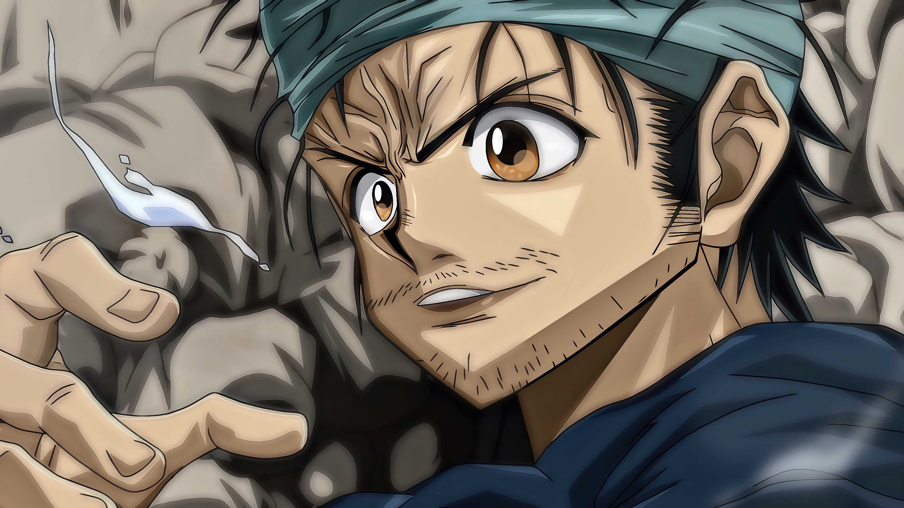

En un mundo donde el 80% de la humanidad nace con "Dones" (superpoderes), Izuku Midoriya es parte de la desafortunada minoría que nace sin ellos. A pesar de esto, su sueño de convertirse en un héroe es inquebrantable. Tras un encuentro fortuito con su ídolo, el héroe número uno All Might, Izuku hereda un poder inimaginable. Ahora debe aprender a controlarlo en la U.A., la academia de héroes más prestigiosa, mientras una oscura liga de villanos amenaza con destruir la paz mundial. Es una historia sobre esfuerzo, legado y lo que realmente significa ser un héroe.
Gon Freecss descubre que el padre que creía muerto es en realidad un legendario "Cazador", un miembro de la élite de la humanidad especializado en rastrear tesoros, bestias exóticas e incluso a otras personas. Para encontrarlo, Gon abandona su hogar y se inscribe en el letal Examen de Cazador. En el camino hace amigos entrañables (y enemigos aterradores) y descubre el "Nen", una energía mística que dicta la supervivencia. No te dejes engañar por su inicio colorido; es uno de los animes más oscuros, estratégicos e impredecibles que existen.

Gabimaru "el Vacío", un frío y despiadado ninja condenado a muerte, recibe una oferta imposible de rechazar: un perdón absoluto por todos sus crímenes. ¿La condición? Debe viajar a una isla mística y supuestamente paradisíaca para recuperar el Elixir de la Vida para el Shogun. Acompañado por su verdugo, descubrirá que la isla no es un paraíso, sino una pesadilla psicodélica infestada de monstruos grotescos y dioses letales. Es una carrera mortal por la supervivencia donde cada paso en falso garantiza un final sangriento.

"Riqueza, fama, poder". El Rey de los Piratas, Gol D. Roger, lo consiguió todo y, antes de ser ejecutado, reveló que su mayor tesoro, el "One Piece", estaba escondido en algún lugar del océano más peligroso del mundo: el Grand Line. Años después, Monkey D. Luffy, un chico cuyo cuerpo se volvió de goma tras comer una Fruta del Diablo, se lanza al mar para encontrarlo. Es una aventura épica de proporciones titánicas, llena de misterios mundiales, gobiernos corruptos y una tripulación de inadaptados que te robarán el corazón.

Ambientada en la violenta era de los vikingos, sigue la historia de Thorfinn, el hijo de uno de los guerreros más grandes que jamás haya existido. Cuando su padre es asesinado a traición por un astuto líder mercenario llamado Askeladd, el mundo del niño se derrumba. Impulsado por una sed de venganza ciega, Thorfinn se une a la misma tripulación de su enemigo, soportando guerras brutales y masacres solo para ganarse el derecho a un duelo a muerte con él. Es un drama histórico brutal, visceral y profundamente emocional sobre la redención y la búsqueda de la paz.

En un mundo donde la magia lo es todo, Asta y Yuno son dos huérfanos con el mismo objetivo: convertirse en el Rey Mago, el caballero más fuerte del reino. Mientras Yuno es un prodigio bendecido con un inmenso poder mágico, Asta nació sin una sola gota de magia. Justo cuando toda esperanza parece perdida, Asta recibe un rarísimo grimorio oscuro de cinco hojas que le otorga el poder de la "Antimagia". Es un anime que toma todos los clichés del género y los acelera a fondo, entregando batallas épicas, un ritmo frenético y una rivalidad legendaria.